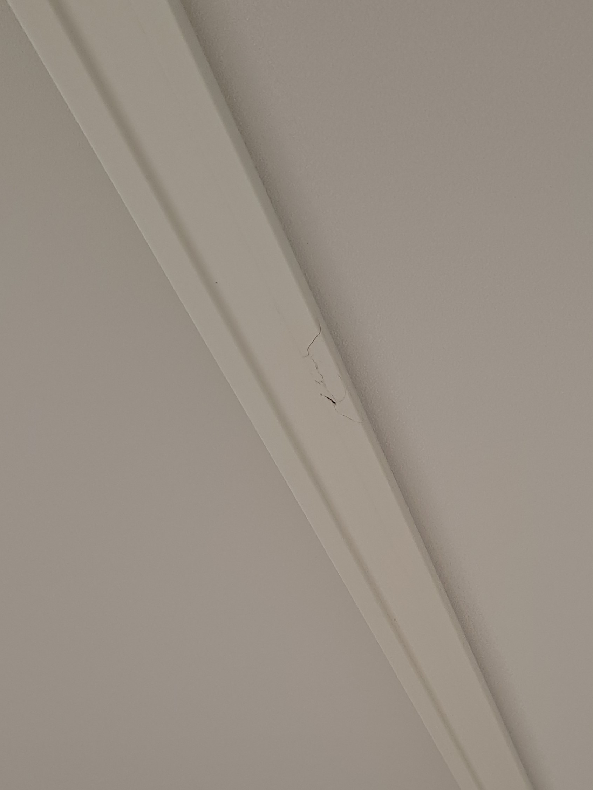
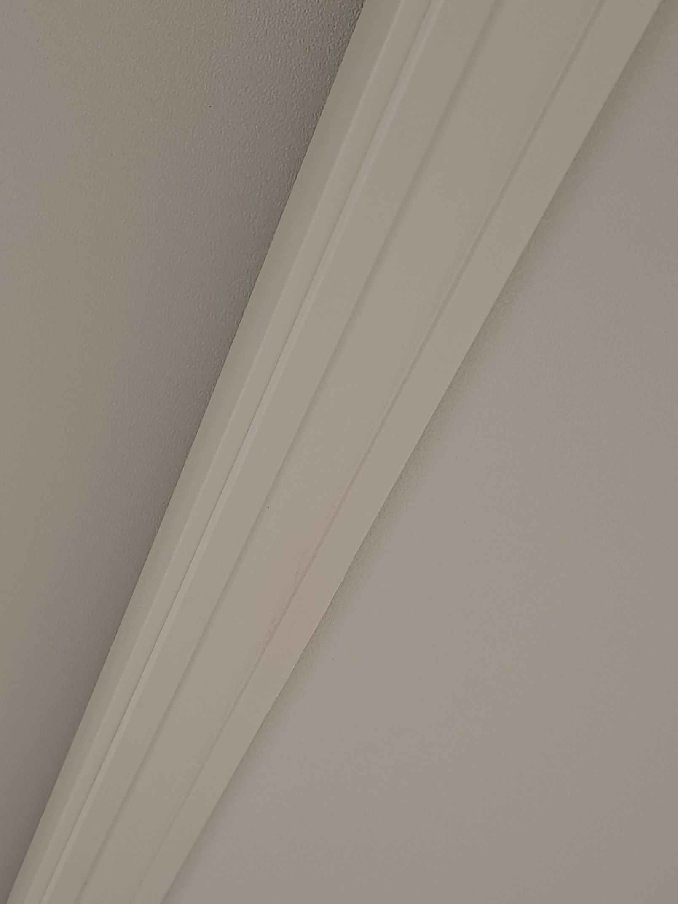

기존 몰딩 유지
같은 자재를 새로 구하지 않아도 기존 몰딩의 파손 부위만 복원합니다.
집에서 골프 연습을 하던 중 골프채가 천장 몰딩에 부딪혀 표면이 깨지고 안쪽까지 파손된 현장입니다. 관리사무소에도 같은 몰딩 자재가 없어 전체 몰딩을 교체해야 했고, 거실과 주방까지 이어진 도배 공사도 필요해 부분복원을 알아보셨습니다. 클린멋쟁이 블로그의 실제 후기를 보고 기술력을 믿고 의뢰해주셨습니다.

천장 몰딩은 여러 굴곡과 선이 이어지는 마감재입니다. 파손 부위를 단순히 메우면 선이 끊기거나 표면이 불룩해 보일 수 있어, 내부를 보강한 뒤 기존 몰딩의 곡선과 높이를 정교하게 재현해야 합니다.
동일한 자재가 단종되었거나 거실과 주방 몰딩이 길게 이어져 있다면, 작은 파손 때문에 전체 교체와 도배까지 진행하기보다 기존 몰딩을 살리는 방법을 검토할 수 있습니다.
같은 자재를 새로 구하지 않아도 기존 몰딩의 파손 부위만 복원합니다.
몰딩 철거로 인해 거실과 주방 벽지까지 다시 시공해야 하는 부담을 줄입니다.
철거와 재설치 범위를 줄여 비교적 짧은 시간 안에 마무리할 수 있습니다.
기존 몰딩의 곡선, 단차와 흰색 톤을 현장에서 맞춰 이질감을 줄입니다.
머리 위에 설치된 마감재인 만큼 내부를 안정적으로 보강하고, 기존 몰딩의 선과 곡면이 자연스럽게 이어지도록 단계별로 복원합니다.
바닥과 주변 벽을 보호하고 파손 깊이와 흔들리는 부분을 확인합니다.
들뜬 조각과 약해진 가장자리를 정리해 복원할 바탕을 만듭니다.
파손 내부를 보강하고 기존 몰딩의 높이와 굴곡에 맞춰 형태를 잡습니다.
주변 몰딩과 이어지는 선이 끊겨 보이지 않도록 세부 형태를 다듬습니다.
표면을 매끄럽게 정리하고 기존 색상에 맞춰 마감한 뒤 확인합니다.
파손된 내부를 보강하고 주변 몰딩의 굴곡과 높이를 연결한 뒤 기존 흰색 톤에 맞춰 마무리했습니다.

“와! 진짜 신기하네요~ 몰딩을 새걸로 교체한 것 같아요!”
| 비교 항목 | 부분복원 | 전체 교체 |
|---|---|---|
| 비용 | 손상 부위 중심으로 비교적 부담이 적음 | 자재·철거·도배 비용까지 커질 수 있음 |
| 작업시간 | 현장 상태에 따라 비교적 짧음 | 자재 준비와 후속 도배 일정이 필요함 |
| 생활 불편 | 작업 범위가 작아 불편을 줄일 수 있음 | 거실·주방까지 공사 범위가 넓어질 수 있음 |
| 완성도 | 기존 몰딩 형태와 색상에 맞춰 자연스럽게 복원 | 새 자재로 교체되지만 기존 자재와 차이가 날 수 있음 |
| 효과 | 기존 마감을 유지하며 국소 파손을 보강 | 노후·변형이 넓은 몰딩을 전체적으로 교체 |
천장 전체와 파손 부위를 함께 보내주시면 몰딩 형태와 손상 상태를 확인해 상담합니다.